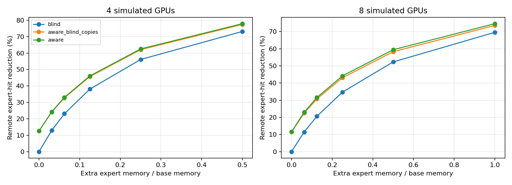
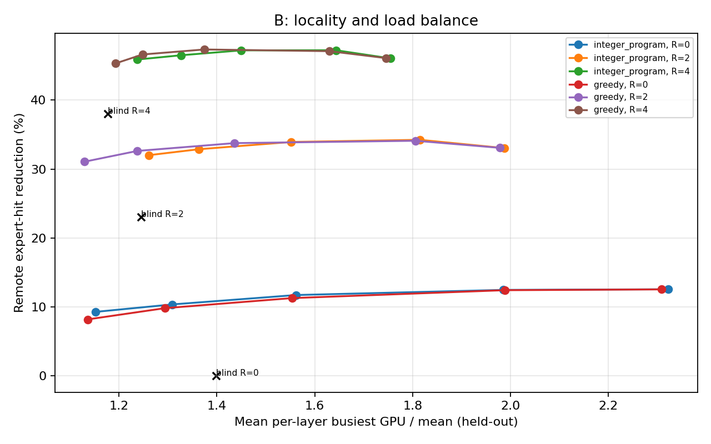
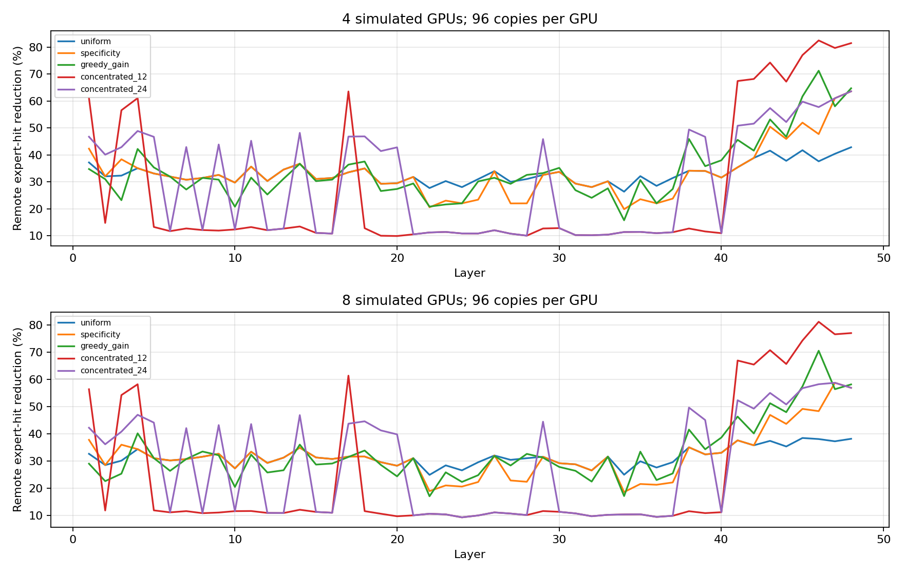
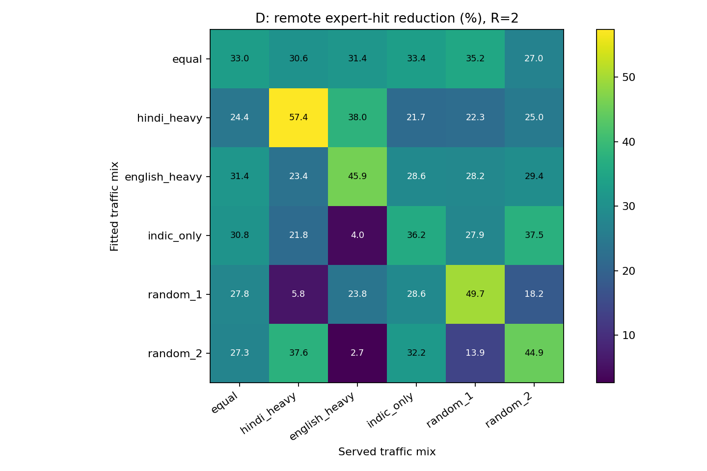
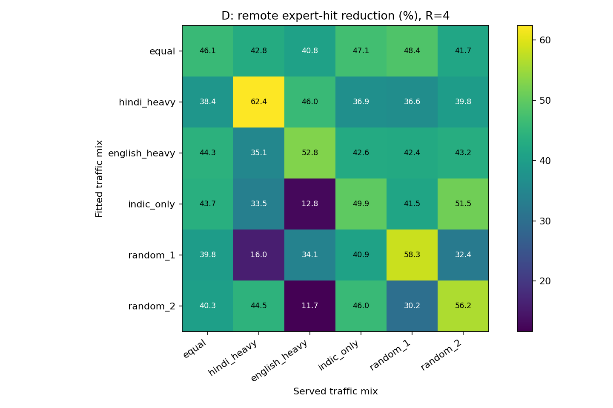

Executed CPU simulations · 9 November 2026
No real-GPU latency result is claimed. These runs use Qwen3/Wikipedia counts only.
Full findings and limitations · Download tables, figures, scripts and notes
On four GPUs with two copies each, fully language-aware placement adds 9.98 percentage points of traffic reduction over language-blind placement. Picking the copies by language adds just 0.32 points.
A primary-load cap of 1.1 retains 32.01% traffic reduction versus 33.05% without a cap, while mean held-out layer imbalance falls from 1.99 to 1.26. The cap is fitted before replicas; it does not guarantee held-out load or latency.
Greedy allocation by expected savings beats uniform allocation by 1.24 percentage points on four GPUs and 1.45 on eight. Concentrating all copies in the most language-specific layers loses overall savings.
Indic-only traffic retains an 11.10 percentage-point advantage over the language-blind comparator at R2. This does not isolate language labels from request homing. The worst tested mixture mismatch loses 51.55 points versus a matched plan.





Four-GPU B has 240 proven layer optima. Optional eight-GPU B was stopped as a bounded pilot, with no optimum claimed. A/C include eight GPUs. Traffic is an expert-hit proxy, not bytes or latency. Source model code and original results are unchanged.